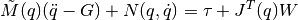
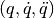
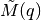
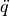
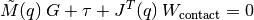

Smart Stiffness¶
NAOqi Motion - Overview | API
What it does¶
Smart Stiffness is a unique feature that allows to adapt automatic engine power to the posture of the robot. This result to an optimized resources drive, energy savings for battery: NAO is less tiring.
How it works¶
Reflex activation¶
The Smart Stiffness reflex is activated in any static posture of NAO (stand, sit, lifted, lying down...).
If at least one joint moves, the user Stiffness command is applied on all joints.
User command priority¶
The user command has the priority over the Smart Stiffness.
For example, if you ask a Stiffness of 0.2 on the HeadYaw joint and the Smart Stiffness computation gives 0.38, then the Stiffness in the HeadYaw joint will be 0.2.
Calculation principles¶
The main idea is to limit the torque of NAO joints, so the robot becomes more compliant and saves energy.
As the stiffness is a torque limitation, the result of the smart stiffness is a stiffness command for every joint at every ALMotion cycle.
To determine the good torque to apply for each joint, we use the inverse dynamics equation:

- where:
-  position, velocity and acceleration of all joints
-  the inertial matrix of each body
 the gravity vector
the gravity vector the matrix associated with the Coriolis and centrifuge force
the matrix associated with the Coriolis and centrifuge force the joint torque is the value that we want compute
the joint torque is the value that we want compute the Jacobian matrix of all joints
the Jacobian matrix of all joints the forces applied on each body (joint friction, contact and external force)
the forces applied on each body (joint friction, contact and external force)
For reason of CPU consumption, we have decided to only compute static torque (so 
and are null) and to ignore external force (no sensor for external force).
- So, we only have to compute torque due to:
- inertial matrix and gravity,
- contact force.
